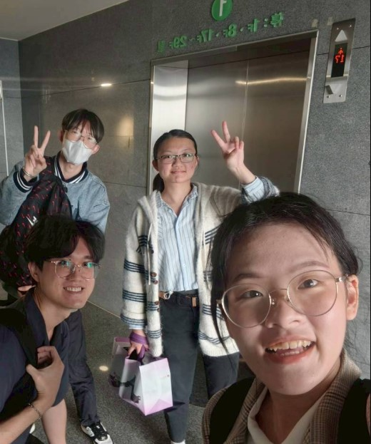

從一群學生與青年開始，到陪伴無數長者的每一雙手。
創辦人郭思廷發現：現今社會逐步邁入高齡化，且同時因為都市化的緣故，生活周遭面臨著缺乏森林與綠地的問題。
為此，我們想透過手作的方式為媒介，讓社區中退休的長者體會在都市生活圈中，如何用各種不同形式的創意活動來體會綠色療癒，並傳遞這份幸福給身邊的每一個人。
我們從致理科技大學為起點，並與鄰近的幸福里合作。從2024年至今持續著進行社區營造活動，繼續為了傳遞這份幸福而行動。
我們相信的事
三個信念，指引著每一次課程設計的方向。
自然療癒
植物、土壤、花草，是最古老的療癒師。我們相信與自然素材的直接接觸，能緩解壓力、喚醒感官，讓身心重新找到平衡。
尊重個體
每位學員的節奏都不同，每件作品都是獨一無二的。我們不以標準評斷，而是在每個人的創作過程中，看見那份獨特的美。
社群共好
手作是連結人心的橋樑。在課程中，學員們彼此分享、互相鼓勵，形成一個充滿溫度的支持社群，讓療癒不只發生在個人身上。
我們的課程有什麼不同
天然素材為主
我們採用植物、花草、稻草、石頭等自然素材，不使用含毒性的化學材料，確保對長輩的身體安全友善。
小班制陪伴
每場課程嚴格控制人數，確保每位學員都能獲得充分的關注與引導，在舒適的步調中完成自己的作品。
適齡設計課程
課程內容依據長輩的體能與認知特點設計，步驟清晰、節奏舒緩，讓每個人都能在無壓力的環境中享受創作。
多元場域配合
除固定工坊課程外，我們也提供到府服務與機構合作，將療癒手作帶進長照中心、社區活動中心等場所。
背後的每一個人
我們是一群對自然與人充滿熱忱的夥伴。
郭思廷
創辦人 ／ 課程設計 ／ 講師
手作愛好者，對於樂齡課程有豐富經驗。曾受邀至各大學講師授課。
呂紹瑜
數位應用 ／ 活動行政
軟體工程師，擅長數位化應用與開發。
黃昱寧
財務 ／ 設計協作
持有照顧服務員證照，負責評估學員需求與課後關懷，確保每位長輩感受到真正的被照顧。
俊達
助教 ／ 活動總務 ／ 招募
板橋在校青年，熟悉校園與社區，協助課程並與長者們互動。
陳小玲
社工師 ／ 社群陪伴
持有社工師執照，負責評估學員需求與課後關懷，確保每位長輩感受到真正的被照顧。